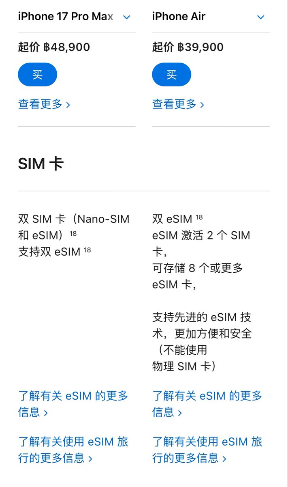
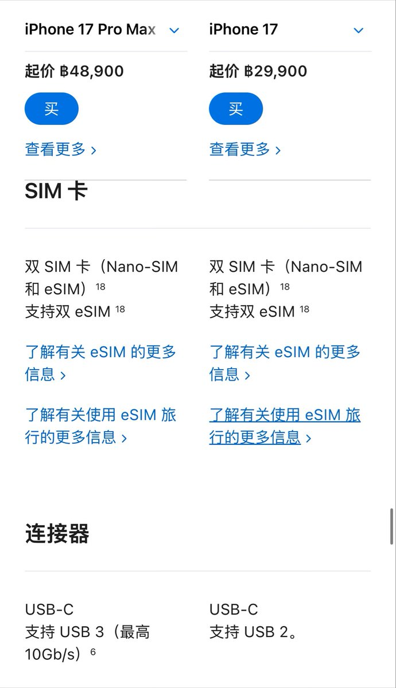

山田リョウ⛩️
@Yamada_Ryoooo
@tutulifestyle 这次港版不也是带一个esim了嘛


TuTu生活志
@tutulifestyle
现在一开国内视频网站就是各种“你该买/不该买iPhone的几大理由”，然后是各种超细致测评，告诉你有什么高级功能，真的是把技术分析做到极致了，让人眼花缭乱。
可比较迷的是，国内的苹果同时有最挑剔的用户和最烂的版本，不支持esim、不支持apple https://t.co/Gk60ypBxC4